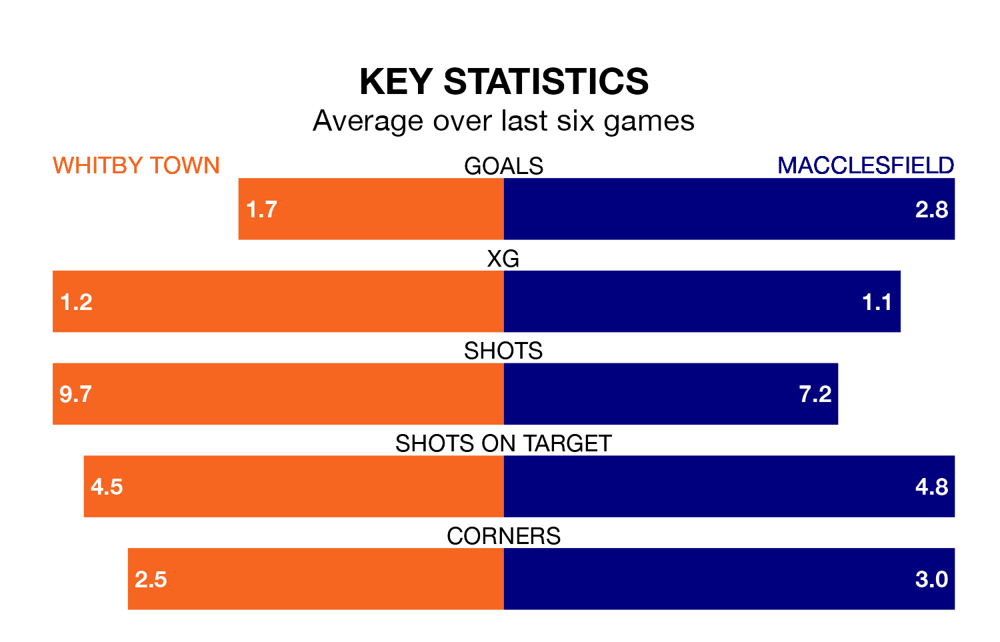

Macclesfield are strong favourites to take all three points despite Whitby Town's home advantage in Saturday's match at the Turnbull Ground.
*Betting Company* are offering odds of 1.76 on Macclesfield sealing the win, with the visitors sitting second in the Northern Premier League table.
Whitby, who are 12th in the league and 21 points behind Macclesfield, are priced at 3.35 to win. A draw is set at 3.95.
Whitby are in bad form in the Northern Premier League, with one win and a draw from their last six games.
With six wins and no losses over that period, Macclesfield's form is much better – they have taken 18 points from 18, compared to Town's four.
With 82 goals in 37 games so far this season, the visitors are the league's third-highest scorers with 2.2 goals per game. And they are conceding fewer than average, letting in 42 goals at a rate of 1.1 per game.
The home team, meanwhile, are below average scorers, with 1.5 goals per game, compared to a league average of 1.6. They have conceded 1.3 goals per game.
Whitby's last match was on April 20, a 3-2 loss against Bamber Bridge.
Macclesfield beat Workington 2-0 last time out, also on April 20.
Updated: 07:59 (UTC), 26/04/24